Data Analysis: The US Death Penalty Visualized
Analyzing state executions
This blog post was inspired by the extremely moving BBC documentary “Fourteen Days in May.” To learn more about what it is like living on death row as a young black man in the South, you can view the full doc below. Bring some tissues.
In case you weren’t aware, there was a brief period of about four years when the US Supreme Court, in Furman v. Georgia, banned the death penalty in 1972. It remained unconstitutional until 1976 and the case of Gregg v. Georgia, which then reinstated it.
Since then, various revisions to federal policy have been made through the courts, such as banning the execution of mentally insane persons in 1986’s Ford v. Wainwright case and the somewhat controversial (to me at least) decision of McCleskey v. Kemp in 1987 that stated that differences in rates of execution by racial group do not constitute a violation of one’s Constitutional rights to “equal protection of the law” unless one can prove that one was discriminated against personally.
Really? If it turned out that 90% of all prisoners executed were black (which make up about 13% of the general population), you’re telling me there isn’t a systematic problem with the legal system? At which point do we say that certain racial disparities in sentencing and punishment are the result of systematic discrimination? The Supreme Court’s decision may be well-grounded legally-speaking, but sets a dangerous precedent for corruption and bias in sentencing.
With these developments in mind, particularly the racial aspect to the death penalty, I’d like to analyze this dataset. You can find it at https://deathpenaltyinfo.org
library(tidyverse)
library(lubridate)
library(ggrepel)
library(broom)
library(treemap)
library(rvest)
library(gridExtra)
library(RColorBrewer)
library(fiftystater)
options(scipen = 999)
Let’s read in our data. The CSV file contains rows 1479 cases of execution and 14 columns. Some dates appear to be missing so we’ll need to fix that or omit them. Here will will simply omit them.
We also need to convert many columns to factors for better plotting. We’ll use mutate_at() for that.
df <- read.csv('execution_database.csv', stringsAsFactors = F)
missing <- as.numeric(rownames(df[df$Date == '',]))
df <- df[-missing,]
df <- df %>%
mutate_at(vars(4,5,7:14), funs(as.factor(.)))%>%
mutate_at(vars(1), funs(mdy(.)))
glimpse(df)
## Observations: 1,479
## Variables: 14
## $ Date <date> 1986-01-10, 1985-01-11, 1997-0...
## $ Name <chr> "James Roach", "Joseph Shaw", "...
## $ Age <int> 25, 29, 49, 47, 31, 26, 48, 31,...
## $ Sex <fct> m, m, m, m, m, m, m, m, m, m, m...
## $ Race <fct> White, White, Latino, White, Wh...
## $ Number...Race...Sex.of.Victims <chr> "1 White Male(s)1 White Female(...
## $ State <fct> SC, SC, AR, AR, ID, VA, TX, WA,...
## $ Region <fct> S, S, S, S, W, S, S, W, S, M, S...
## $ Method <fct> Electrocution, Electrocution, L...
## $ Juvenile <fct> Yes, No, No, No, No, Yes, No, N...
## $ Federal <fct> No, No, No, No, No, No, No, No,...
## $ Volunteer <fct> No, No, No, No, Yes, No, No, Ye...
## $ Foreign.National <fct> No, No, No, No, No, No, No, No,...
## $ County <fct> Richland, Richland, Logan, Neva...
Basic Visual Overview of Data
#grid.arrange(arrangeGrob(p1, p2))
#The analysis
gend <- df %>%
group_by(Sex)%>%
summarize(n = n())%>%
mutate(prop = n/sum(n))%>%
ggplot(aes(Sex, prop, fill=Sex))+
geom_col()+
guides(fill=FALSE)+
theme_minimal()+
labs(title='Gender')
state <- df %>%
group_by(State = fct_lump(State, n=10))%>%
summarize(n = n())%>%
mutate(prop = n/sum(n))%>%
ggplot(aes(State, prop, fill=State))+
geom_col()+
guides(fill=FALSE)+
theme_minimal()+
theme(axis.text.x = element_text(angle=90))+
labs(title='States')
methods <- df %>%
group_by(Method = fct_lump(Method, n=5))%>%
summarize(n = n())%>%
mutate(prop = n/sum(n))%>%
ggplot(aes(Method, prop, fill=Method))+
geom_col()+
coord_flip()+
guides(fill=FALSE)+
theme_minimal()+
labs(title='Methods')
races <- df %>%
group_by(Races = fct_lump(Race, n=5))%>%
summarize(n = n())%>%
mutate(prop = n/sum(n))%>%
ggplot(aes(Races, prop, fill=Races))+
geom_col()+
guides(fill=FALSE)+
coord_flip()+
theme_minimal()+
labs(title='Race')
ages <- df %>%
ggplot(aes(Age, fill=Race))+
geom_density(alpha=.5)+
theme_minimal()+
guides(fill=FALSE)+
labs(title='Ages')
yrs <- df %>%
mutate(yr = as.integer(str_sub(df$Date, 1,4)))%>%
ggplot(aes(yr, fill=Region))+
geom_density(alpha=.5)+
theme_minimal()+
theme(axis.text.x = element_text(angle=90))+
labs(title='Years of Executions')+
guides(fill=FALSE)+
facet_wrap(~ Region)
grid.arrange(arrangeGrob(gend, methods, races, ages, state, yrs, ncol = 3, nrow=2))
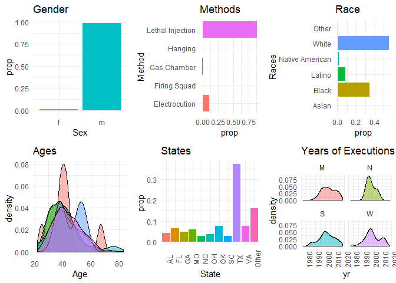
We can see that about 99% of executed inmates are men. Most people are executed by lethal injection, though there are some places that electrocute inmates. Most of the people executed are white, though a sizeable portion–about 33%–are black. Most people are executed around the age of 40, for some reason. Texas by far outnumbers all other states as it makes up about 40% of all executions in the USA. And it appears as though executions peaked in all four regions around the year 2000 and have been declining since. That’s a good thing if you ask me.
Already we can see that the issue of racial bias is complicated: there is not an obviously disproportionate amount of minorities receiving the death penalty. We would likely need to investigate on the state level to find out.
Deeper Dive into Ages by Race and Gender
Do males and females get executed at different ages? It’s difficult to say because only about 1% of the executed were female. But there does appear to be quite a difference in median age.
med_age <- df %>%
group_by(Sex)%>%
summarize(cts = n(),
med_age = median(Age, na.rm=TRUE))
plot_gender <- df %>%
group_by(Sex)%>%
ggplot(aes(Age, fill=Sex))+
geom_density(alpha=.5)
gend_plot <- plot_gender +
geom_vline(xintercept = med_age$med_age[1], data=med_age, color='red')+
geom_vline(xintercept = med_age$med_age[2], data=med_age, color='blue')+
theme_minimal()+
labs(title='Gender')
#And now black and white ages
med_age_race <- df %>%
group_by(Race)%>%
filter(Race == 'White' | Race == 'Black')%>%
summarize(cts = n(),
med_age = median(Age, na.rm=TRUE))
plot_races <- df %>%
group_by(Race)%>%
filter(Race == 'White' | Race == 'Black')%>%
ggplot(aes(Age, fill=Race))+
geom_density(alpha=.5)
races_plot <- plot_races +
geom_vline(xintercept = med_age_race$med_age[1], data=med_age_race, color='red')+
geom_vline(xintercept = med_age_race$med_age[2], data=med_age_race, color='blue')+
theme_minimal()+
labs(title='Race')
grid.arrange(arrangeGrob(gend_plot, races_plot, ncol = 2, nrow=1))
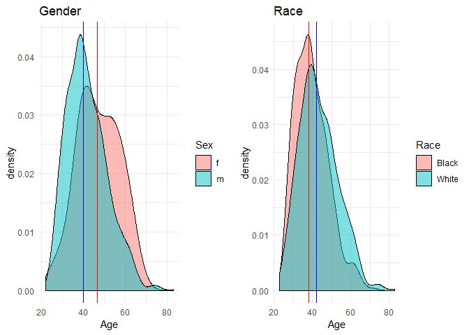
It appears as though whites are executed at a slighly older age than blacks. Why could this be? Could this be a statistical blip? In order to find out, let’s use bootstrap resampling in order to make an inference as to the population difference in median ages between blacks and whites who are executed.
We’ll resample the data with replacement to find a 95% confidence interval for the difference in medians. If the interval contains 0 then we can’t rule out the explanation that this observation was simply due to chance. In other words, if it doesn’t contain 0, then we can say with high confidence (95% confidence) that there really is a difference in ages between blacks and whites. If we can establish statistical significance, then we might decide to invest more time looking for possible causes.
Bootstrapping the median difference in ages for blacks and whites
Essentially we will be grouping by race, then sampling with replacement and then calculating the median of both groups, then finding the difference. We will do this 1000 times in order to generate a sampling distribution of differences in median ages, which would otherwise be very difficult to analytically compute (I’m not aware of any theoretical distribution that this statistic would follow).
set.seed(1)
boot_meds <- function(d){
d %>%
filter(Race == 'White' | Race == 'Black')%>%
group_by(Race)%>%
sample_frac(1.0, replace=TRUE)%>%
summarize(m = median(Age))%>%
summarize(med_diff = m[Race == 'White'] - m[Race =='Black'])
}
#take a stat and replicate it x times and get the 95% ci
replicate_medians <- function(func,objs, times=100){
boots <- unlist(replicate(times, func(objs)))
quantile(boots, probs = c(.025, .975))
}
#perform the bootstrapping and calculations, return quantils and plot hist
replicate_medians(boot_meds,df, times=100)
## 2.5% 97.5%
## 2 5
Our resampled 95% CI for the difference in median ages is 2 to 5 years. This means that we can be quite certain that whites tend to be somewhere between 2 to 5 years older than blacks when executed in our population of interest. This supports idea of younger black men being executed. Something about this doesn’t sit well with me.
Could it be because some blacks can’t get the legal help they need to appeal (and drag on the legal battle) and are therefore executed earlier? Perhaps whites can afford to appeal due to better legal help? Or perhaps blacks just tend to commit crimes earlier in life. It’s impossible to guess what the reasons might be.
To verify the validity of this inference, we can statistically test the differences in age using a t-test. Note that this tests the differences in mean age, not the median.
pairwise.t.test(df$Age, df$Race)
## Pairwise comparisons using t tests with pooled SD
##
## data: df$Age and df$Race
##
## Asian Black Latino Native American Other
## Black 1.00 - - - -
## Latino 1.00 1.00 - - -
## Native American 1.00 1.00 0.95 - -
## Other 1.00 1.00 1.00 1.00 -
## White 1.00 0.00000000024 0.00000259610 1.00 1.00
##
## P value adjustment method: holm
We find indeed a statistically significant difference in age between whites and blacks and whites and Latinos. Why would minorities tend to be younger when executed?
Some states execute on average much older prisoners
We can see that on average, there is a big disparity in average age of execution in states like Texas (39.5) and Florida (46.7). Why? And is this difference statistically significant? Let’s use a t.test() again to find out.
Note here the useful function fct_lump() from the forcats package. This function will easily create 10 groups of the most prevalent factor values and the “lump” the remaining values into an “other” category. It is great for making quick visualizations.
df %>%
mutate(new_state = fct_lump(State, n=10))%>%
group_by(new_state)%>%
mutate(new_state_ct = n(),
avg_age = round(mean(Age),1),
med_age = round(median(Age),1))%>%
ggplot(aes(Age, fill=new_state))+
geom_histogram(bins=20)+
geom_text(aes(x = 50, y= 40,label = paste("Total Executions:",new_state_ct,'\n','Avg Age:',avg_age)), color='red', size=3)+
geom_vline(aes(xintercept = med_age))+
facet_wrap(~ new_state)+
guides(fill=FALSE)+
theme_minimal()
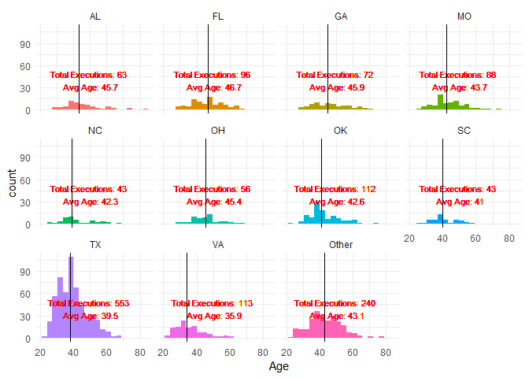
df %>%
filter(State == 'TX' | State == 'FL')%>%
do(tidy(t.test(.$Age~.$State)))
## estimate estimate1 estimate2 statistic p.value parameter
## 1 7.210537 46.67708 39.46655 7.140531 0.00000000006669214 125.3245
## conf.low conf.high method alternative
## 1 5.21206 9.209014 Welch Two Sample t-test two.sided
Indeed the probability that, given our observed difference, the population difference in mean ages is 0 among those executed in Florida and Texas, is less than 1 in 10 billion.
I said earlier that I was particularly interested in the rates of execution for different racial groups. Let’s now look at those data in the top 5 states by volume of executions.
df %>%
mutate(new_state = fct_lump(State, n=5))%>%
group_by(new_state)%>%
mutate(Race = fct_lump(Race, n=2))%>%
count(Race)%>%
ggplot(aes(reorder(Race,n),n, fill=Race))+
geom_col()+
coord_flip()+
facet_wrap(~ new_state)+
theme_minimal() +
theme(axis.text.x = element_text(angle = 45))+
labs(y='Count of executions', x='Race of executed', title='Racial Breakdown of top 5 States')
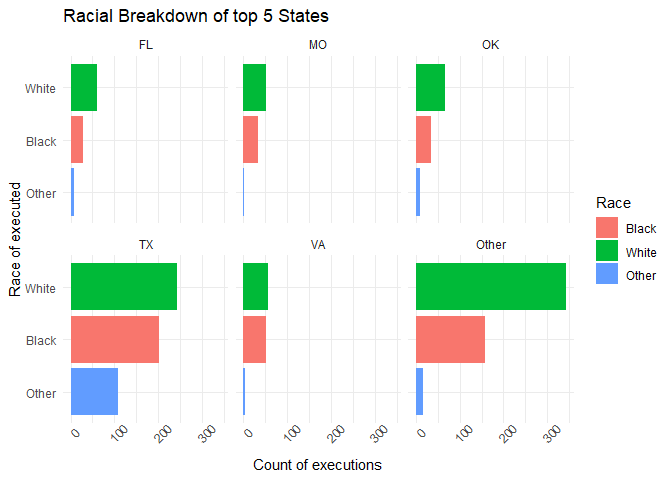
We see a pretty even distribution of white and black executions. Texas has a relatively large Latino population that is represented as “other.”
Which places use unusual execution methods?
df %>%
filter(Method %in% c('Gas Chamber', 'Hanging', 'Firing Squad'))%>%
count(State, Method)%>%
ggplot(aes(Method,n, fill=Method))+
geom_col()+
coord_flip()+
facet_wrap(~ State)+
labs(y='Count of executions', x='Method', title='States with Unusual Execution Methods')
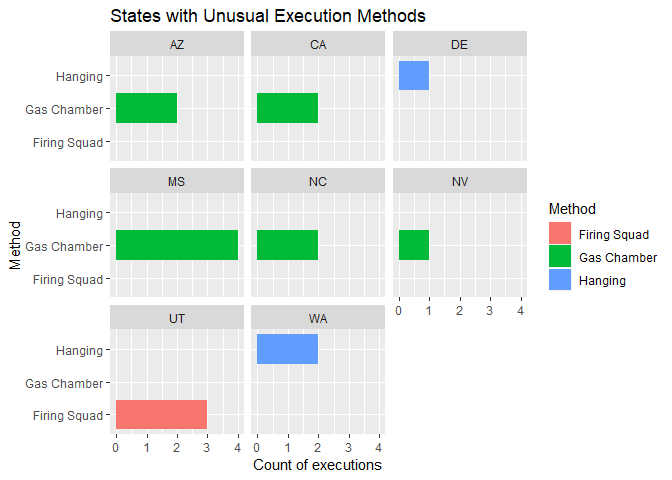
Looks like mostly Missouri, but Utah uses firing squads, and Delaware and Washington had a hanging.
You can probably guess which region has the most executions
Among states in the North, South, West, and East, which region executes the most criminals? The South definitely kills more and prefers lethal injection with the occasional electric chair. The North has almost 0 killings. Interestingly, when the West does execute, they use sometimes use unconventional methods, such as the firing squad, hanging, or the gas chamber.
df %>%
count(Region, Method)%>%
ggplot(aes(reorder(Region, n),n, fill=Method))+
geom_col(position = 'dodge', width = .5)+
theme_minimal()+
labs(y='Count of executions', x='Region of USA', title='Which Regions Execute Most?')
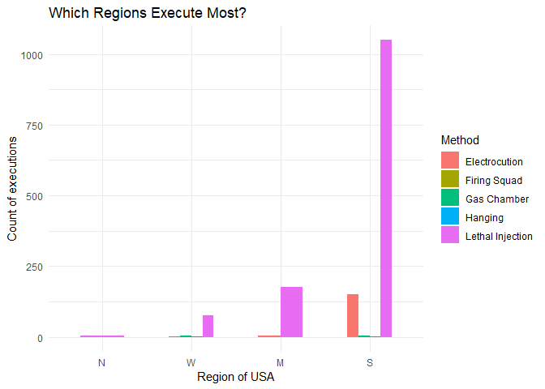
Which counties execute the most?
We’ll use a treemap to visualize where most of the executions are taking place.
df %>%
ungroup()%>%
unite(county, 'County', 'State', sep='\n')%>%
count(Region, county,sort=T)%>%
treemap(index="county",
vSize="n",
vColor = "Region",
palette = 'Set1',
type="categorical",
fontsize.labels = 8,
title= 'Counties with Most Executions'
)
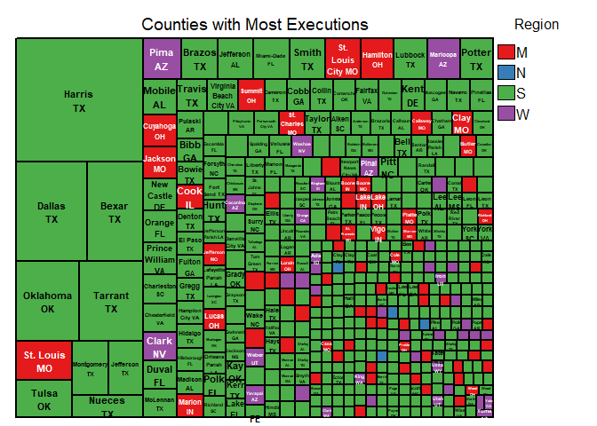
Here again we see the South dominating, mostly because of Texas. Missouri is considered here as the Midwest and represents a large portion of their executions.
Who were the most violent people on death row?
In order to count the number of victims we will need to write a regex pattern that collects the digits and sums them.
person <- df %>%
rename('vics' = Number...Race...Sex.of.Victims)%>%
mutate(num_vics = str_extract_all(vics, '[0-9]+'))%>%
group_by(Date,Name)%>%
mutate(total = sum(as.integer(unlist(num_vics))))%>%
filter(total > 3)%>%
ggplot(aes(reorder(Name, total),total, fill=Race))+
geom_col()+
coord_flip()+
geom_text(aes(label = Method), hjust=-.05, size=2) +
theme_minimal()+
labs(x='Person', y='# killed')+
theme(plot.subtitle = element_text(vjust = 1),
plot.caption = element_text(vjust = 1),
axis.text.y = element_text(size = 5))
pers_no_tim <- df %>%
rename('vics' = Number...Race...Sex.of.Victims)%>%
mutate(num_vics = str_extract_all(vics, '[0-9]+'))%>%
group_by(Date,Name)%>%
mutate(total = sum(as.integer(unlist(num_vics))))%>%
filter(total > 3 && Name != 'Timothy McVeigh*')%>%
ggplot(aes(reorder(Name, total),total, fill=Race))+
geom_col()+
coord_flip()+
geom_text(aes(label = Method), hjust=-.05, size=2) +
theme_minimal()+
labs(x='Person', y='# killed', title='Without Tim McVeigh')+
theme(plot.subtitle = element_text(vjust = 1),
plot.caption = element_text(vjust = 1),
axis.text.y = element_text(size = 5))
grid.arrange(arrangeGrob(person, pers_no_tim, ncol = 2, nrow=1))
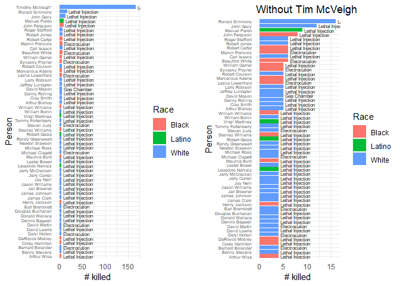
If you’re not faint-hearted, you should read the Wikipedia page about Ronald Simmons. https://en.wikipedia.org/wiki/Ronald_Gene_Simmons
Volunteering for execution
Prior to this analysis, I did not know that it is fairly common for inmates to volunteer to be executed. Essentially these people give up the appeals process and ask the state to kill them as quickly as is possible. From the chart below, you can see that on average about 13% of death row inmates forgo their rights to appeal their execution.
Do rates of volunteerism differ by race?
There are a few ways we can try to answer this question. Probably the best way is by using the pairwise.prop.test() which gives us p-values and the specific pairs of groups which are being compared. Remember that the null hypothesis is that the rates of execution volunteerism are the same across all racial groups. We want to test this hypothesis given the observed rates in our sample.
To start, you can see that whites have a relatively high rate of volunteerism, while blacks have a disproportinately low rate of volunteerism.
df %>%
count(Race, Volunteer, sort=T)%>%
ungroup()%>%
group_by(Race)%>%
mutate(perc_volunteer = n/sum(n))%>%
ggplot(aes(Volunteer, perc_volunteer, fill=Race))+
geom_col(position='dodge')+
theme_minimal()
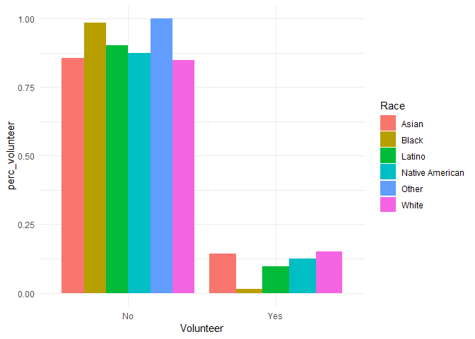
Why would this difference exist? My best guess is that some of the black inmates are unjustly on death row: they didn’t commit the crime, so of course they wouldn’t want to die. This is essentially what happened in documentary, “Fourteen Days in May,” which I highly recommend. Especially if you support the death penalty.
The prop.test() function is kind of funky in that it requires a table object in a certain format. We transpose it to make it ‘long.’ But the prop.test() does not tell us which groups are different, only that there is a difference among the groups.
We recieve the warning because the cell counts are too low (< 5) for some racial groups such as Native American.
yes_tab <- t(table(df$Volunteer, df$Race))[,c('Yes', 'No')]
prop.test(yes_tab)
## Warning in prop.test(yes_tab): Chi-squared approximation may be incorrect
##
## 6-sample test for equality of proportions without continuity
## correction
##
## data: yes_tab
## X-squared = 66.806, df = 5, p-value = 0.0000000000004728
## alternative hypothesis: two.sided
## sample estimates:
## prop 1 prop 2 prop 3 prop 4 prop 5 prop 6
## 0.14285714 0.01377953 0.09677419 0.12500000 0.00000000 0.15085158
We can see here the big disparity between blacks and whites: whites volunteer around 15% of the time (prop 6), while blacks only volunteer around 1.3% of the time (prop 2).
We can deal with this issue of not a big enough sample by using Monte Carlo simulation to get more accurate p-values for these groups with small cell counts. Now the error goes away and we see again there is a difference in proportion.
#this only tells us there's a difference
chisq.test(t(table(df$Volunteer, df$Race)), simulate.p.value = TRUE)
##
## Pearson's Chi-squared test with simulated p-value (based on 2000
## replicates)
##
## data: t(table(df$Volunteer, df$Race))
## X-squared = 66.806, df = NA, p-value = 0.0004998
Finally, let’s find out which groups differ most significantly. The Holm method is one way this test makes up for the problem of multiple comparisons. This method also generates a warning, FYI.
pairwise.prop.test(t(table(df$Volunteer, df$Race)))
##
## Pairwise comparisons using Pairwise comparison of proportions
##
## data: t(table(df$Volunteer, df$Race))
##
## Asian Black Latino Native American Other
## Black 1.00 - - - -
## Latino 1.00 0.000071965624434 - - -
## Native American 1.00 0.22 1.00 - -
## Other 1.00 1.00 1.00 1.00 -
## White 1.00 0.000000000000012 1.00 1.00 1.00
##
## P value adjustment method: holm
The extremely small p-values here tell us that blacks and whites and blacks and latinos have very different rates of volunteerism. I’ll leave it up to someone more knowledgeable to figure out why this is so.
Executions per Capita
We already know that there are lots of executions in the South and that Texas executes the most of any state, but perhaps a fairer comparison is to look at executions per state resident. This will equalize small and large states.
We will again use the Rvest package to download population data. Here I took the 2000 census numbers because I thought it was a reasonable midpoint for these data that span from 1977-2018.
In the interest of space, I’m going to leave out the nitty gritty wrangling and focus on the results.
With the wrangling done, we can now plot a map of executions per 100,000 residents 2000. If you’re doing any kind of geographical plotting on US maps, I suggest using the fiftystater package, which contains dataframes with latitude and longitudes and state abbreviations. You just need to make sure that your dataframe with the data you want to plot uses the EXACT same spelling/format of states as the fiftystater package.
ggplot(df_plot_cap, aes(map_id = State.y)) +
geom_map(aes(fill = per_100k), map = fifty_states)+
expand_limits(x = fifty_states$long, y = fifty_states$lat) +
coord_map() +
scale_x_continuous(breaks = NULL) +
scale_y_continuous(breaks = NULL) +
scale_fill_viridis_c()+
labs(x = "", y = "", title='Executions per 100,000 Residents since 1977',
subtitle = "States with 0 executions in grey", fill='# Executions') +
theme(panel.background = element_rect(fill = NA)) +
theme(plot.subtitle = element_text(hjust = 0.5,
vjust = 1), plot.caption = element_text(vjust = 1),
plot.title = element_text(hjust = 0.5))
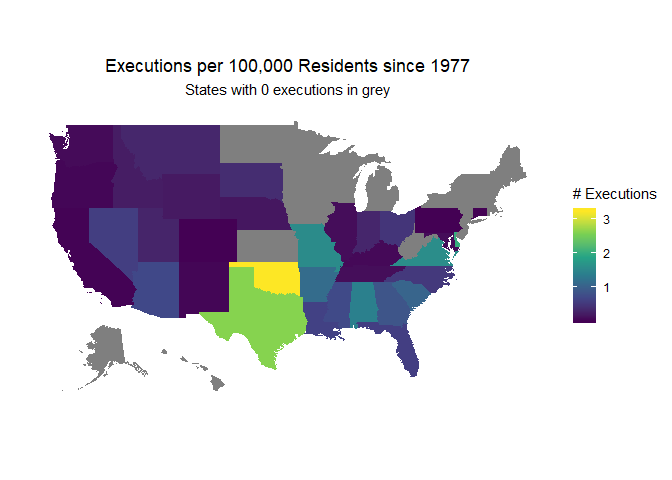
Geographic map of the worst killers
To finish, let’s make a visualization that shows where in the USA the most violent murderers were killed.
#create new col of total killed
df <- df %>%
rename('vics' = Number...Race...Sex.of.Victims)%>%
mutate(num_vics = str_extract_all(vics, '[0-9]+'))%>%
group_by(Date,Name)%>%
mutate(total = sum(as.integer(unlist(num_vics))))
df_murd <- df %>%
select(Date, Name, State, total )%>%
right_join(df_plot_cap, by='State')
#need to go in and average the lat long coords
fif <- fifty_states %>%
group_by(id)%>%
summarize(long = mean(long),
lat = mean(lat))%>%
left_join(df_murd, by=c('id'='State'))%>%
select(1:3)
#we had to get our text to match that from fifty_states dataframe
df_murd <- df_murd %>%
left_join(fif, by='id')
df_murd <- df_murd %>%
left_join(df[,c('Race', 'State', 'Name')], by= c('State', 'Name'))
Note that Tim McVeigh was actually responsible for 168 deaths, but he was federally executed, which has only happened three times since 1977. I did not include federal executions.
Also, in order to keep the visuals under control, we had to subset to those who had killed 3 or more people.
ggplot(df_murd, aes(x=long,
y = lat,
map_id = State.y)) +
geom_map(color='grey', fill='white',map = fifty_states)+
geom_point(aes(x=long, y=lat, color=Race), data= subset(df_murd, total >3))+
geom_text_repel(aes(label = Name, size=sqrt(total), color=Race),
show.legend = F,
segment.alpha= .5, segment.color = 'black', force=10, data= subset(df_murd, total >3))+
expand_limits(x = fifty_states$long, y = fifty_states$lat) +
coord_map() +
scale_size_identity()+
scale_x_continuous(breaks = NULL) +
scale_y_continuous(breaks = NULL) +
scale_color_brewer(type='qual', palette = 6)+
labs(x = "", y = "", title='State Executed Inmates Since 1977',
subtitle = "Size proportional to people killed", size = 'Race') +
theme(panel.background = element_rect(fill = NA)) +
theme(plot.subtitle = element_text(hjust = 0.5,
vjust = 1), plot.caption = element_text(vjust = 1),
plot.title = element_text(hjust = 0.5))
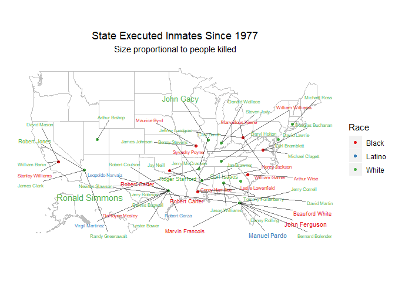
So there you have it. There don’t seem to be any obvious patterns from the geographic distribution of executions, but at the very least you have a list of psychopaths to read about on Wikipedia. I suggest starting with Manuel Pardo of Florida, who was an ex-cop turned ‘vigilante’ who became obsessed with killing Florida drug dealers.
Lingering questions
- Why are blacks executed at a younger age than whites?
- Why do whites volunteer for execution so often, relative to blacks? Or rather, why is it that black death row inmates almost never volunteer to be killed by the state?
In the next blog post, we’ll create a machine learning model that will attempt to predict whether an inmate will volunteer to be executed.